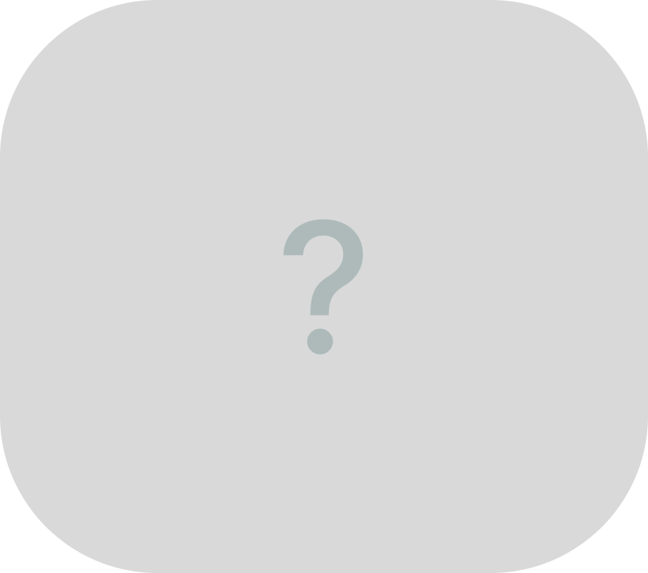

PlantPal – это умный помощник для ухода за комнатными растениями
PlantPal - это программно-аппаратный комплекс для ухода за растениями, включающий устройства удаленного полива и клиент-серверное интеллектуальное мобильное приложение для создания коллекций домашних растений и автоматизации процессов мониторинга их состояния и управление устройствами.
Установить приложение
Базовое устройство для полива, предназначено для ухода за одним цветком. Не содержит встроенных датчиков и дополнительного функционала.
Изготавливается под ваши индивидуальные требования. Может поддерживать до 10 растений. При желании может включать систему датчиков для мониторинга состояния окружающий среды, почвы и тд.